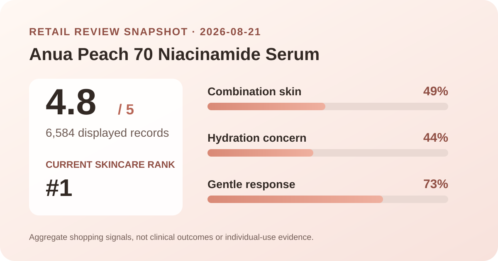
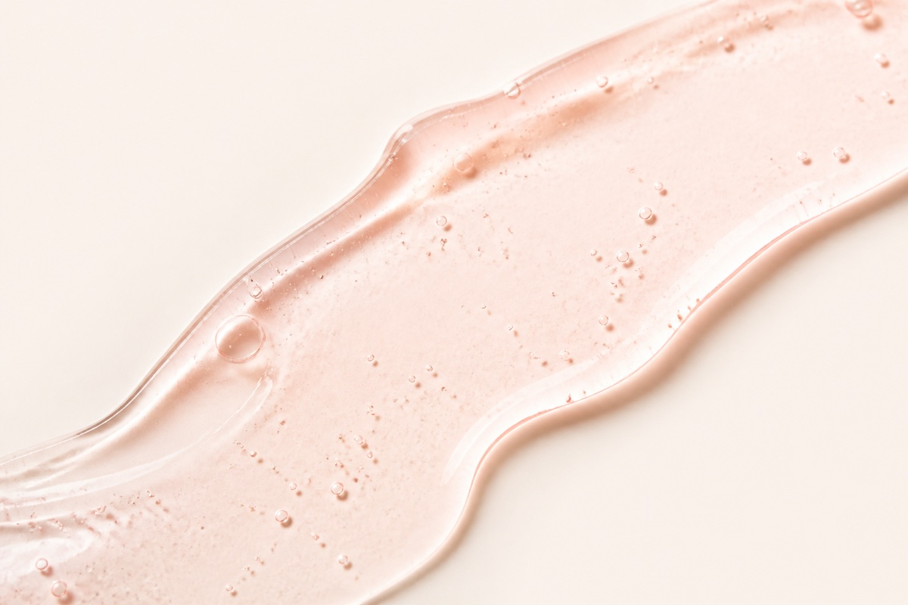

Data captured August 21, 2026. This article uses only the retailer's displayed aggregate rating, review count, polls, price, and anonymous summary themes. No individual review, reviewer name, or user photo is reproduced or translated. I did not test the product on my own skin.

The short version: the listing showed 4.8 out of 5 from 6,584 review records. Its headline polls displayed combination skin at 49%, hydration as the leading concern response at 44%, and a gentle response at 73%. Those are useful shopping signals, not proof of brightening, hydration, or treatment efficacy.
A 4.8 average across 6,584 displayed records is a strong satisfaction signal inside this retailer's review system. It makes the page more informative than a product with a nearly perfect score based on a tiny sample. The count also reduces the influence of any one unusually positive or negative score on the displayed average.
That does not turn the average into an efficacy result. Retail reviews combine different routines, climates, amounts, expectations, incentives, and lengths of use. The listing does not standardize those conditions, and the aggregate score does not identify which variable shaped each rating. It is best treated as market feedback about the purchase and use experience.
The current review view did not provide a dependable five-to-one-star distribution in the summary that was captured. A 4.8 average implies that higher ratings are influential, but inventing exact shares would create false precision. This analysis therefore reports only the verified average and total.
Combination skin was the largest displayed skin-type response. This describes who answered that poll, not a comparative advantage over dry or oily skin.
Hydration was the leading visible concern response. It identifies respondent interest; it does not measure water content or establish lasting hydration.
Most displayed respondents selected the gentle option. This subjective perception cannot rule out stinging, allergy, breakouts, or irritation for an individual.
These percentages answer separate questions and should not be combined into one product score. Skin type describes sample representation, skin concern records what respondents were looking for, and gentleness reflects a perceived use experience. Their denominators were not shown in the captured summary, so converting the percentages into reviewer counts would be misleading.

The retailer's automated summary grouped recent positive discussion around three broad topics: a smoother-looking or more even appearance, a finish that respondents associated with makeup adherence, and a noticeable peach scent. These are paraphrased topic labels from an aggregate summary, not translated excerpts from individual reviews.
The first two themes are useful as questions to investigate, not outcomes to assume. Someone shopping for a serum to wear under base makeup might look for independent demonstrations of pilling, tackiness, and sunscreen compatibility. Someone focused on uneven-looking tone should distinguish a cosmetic impression from a measured change and should not read the theme as evidence that a mark or condition was treated.
The scent theme deserves equal attention because preference can divide users. A pleasant scent for one person can be unwanted for another, and a summary topic does not verify the fragrance ingredients or predict sensitivity. The retailer also displayed 85% recent positive sentiment, but that figure is an automated classification of recent material—not the percentage of all 6,584 records that achieved a particular benefit.
At capture time, the Korea listing displayed ₩25,000 for a promotional set described as two 30 ml bottles, down from a displayed reference price of ₩54,000. The same screen marked the item temporarily sold out. A rank can remain visible while inventory changes, so the ranking position should not be interpreted as proof that the set is currently available.
If it returns, compare the actual serum volume rather than the apparent discount percentage alone. Confirm whether another seller offers a single bottle, a pair, or a formula intended for another market. Shipping, taxes, coupons, return terms, and seller authorization can matter more than the headline markdown.
The words “Peach 70 Niacinamide” are part of the product name. This article does not treat the number as a verified concentration, calculate a dose, or infer the percentage of peach-derived material or niacinamide. A marketing name is not enough to establish an ingredient quantity; that requires current, region-specific information from the package or an authoritative product disclosure.
I also did not capture and verify a complete ingredient list for this analysis. I therefore do not claim that the serum is fragrance-free, alcohol-free, non-comedogenic, pregnancy-compatible, or suitable for acne, rosacea, eczema, allergy, or another condition. The aggregate rating cannot answer those questions.
Follow the current package directions rather than a routine invented from review data. If your skin is reactive, introducing one new product at a time and trying a small area first can make it easier to notice an unwanted response, though it cannot guarantee safety. Stop if the product causes a concerning reaction and seek professional advice when appropriate.
Define what you want to observe before adding it: immediate comfort, finish under sunscreen, scent tolerance, or whether it offers anything beyond a serum already in your routine. A popular ranking and 4.8 average can justify closer inspection, but neither creates a need to replace something that already works for you.
Combination skin was the largest displayed response at 49%. That provides meaningful audience context, but it does not prove the formula performs better for combination skin than for other types.
The retailer's visible poll showed a 73% gentle response. Individual tolerance still depends on the full formula, amount, routine, and personal history.
No. The score summarizes retail satisfaction across 6,584 displayed records. It does not isolate a brightening outcome, measure effect size, or provide a control group.
No. It is a brand-neutral, AI-generated illustration of a general serum texture. It does not depict the actual formula or prove its color, thickness, spread, absorption, or finish.
Anua Peach 70 Niacinamide Serum has a substantial retail feedback base: 4.8 stars across 6,584 displayed records, with useful poll context on combination-skin representation, hydration interest, and perceived gentleness. Its current number-one skincare rank makes it timely to investigate, while the temporary sold-out status is a reminder that rank and availability are different signals.
The strongest conclusion is modest: many shoppers reported a positive experience within this retailer's system. The data does not establish a clinical brightening effect, a verified active concentration, universal gentleness, or suitability for a medical concern. Check the current package, full ingredient list, seller, and inventory before deciding.
← All K-Beauty Data Desk reviews · Best-seller rankings · Skin-poll guide · About & methodology
Published by The K-Beauty Data Desk · Aggregate data captured 2026-08-21. The source data does not independently verify every reviewer's identity. No individual review, name, or user photo is reproduced or translated, and I did not test the product. I received no free product and am not paid or approved by the brand. Check the dated source listing.
Data basis: the live Olive Young Korea skincare ranking and product/review screens captured 2026-08-21. The product title, rating, review count, price, stock label, poll shares, and retailer-generated aggregate themes are source facts. The interpretation and cautions are editorial.